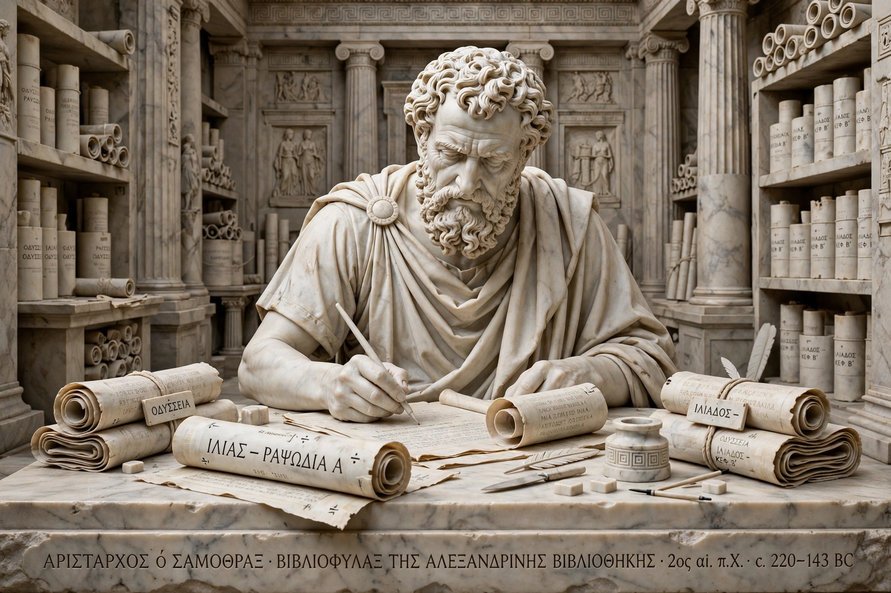

Aristarchus of Samothrace (c. 220 – c. 143 BC) was a Greek grammarian and scholar of the Library of Alexandria, celebrated as the foremost critic of Homer in antiquity. He was a pupil of Aristophanes of Byzantium and tutor to the children of Ptolemy VI.

| Aristarchus | |
|---|---|
| Born | c. 220 BC, Samothrace |
| Died | c. 143 BC, Cyprus |
| Occupation | Grammarian, head of the Library of Alexandria |
Aristarchus produced critical editions (ekdoseis) of the Iliad and Odyssey, with commentaries and a system of critical signs — including the obelus to mark spurious lines and the asteriskos for repeated lines — to athetise verses he judged interpolated. He also edited Hesiod, lyric poets, and tragedians, and wrote on grammar, establishing principles of analogy and textual criticism. Only fragments survive, mainly via scholia and his pupils Didymus and Aristonicus.
His name became a byword for a severe critic — an "aristarch". Modern Homeric scholarship still builds on his methods.